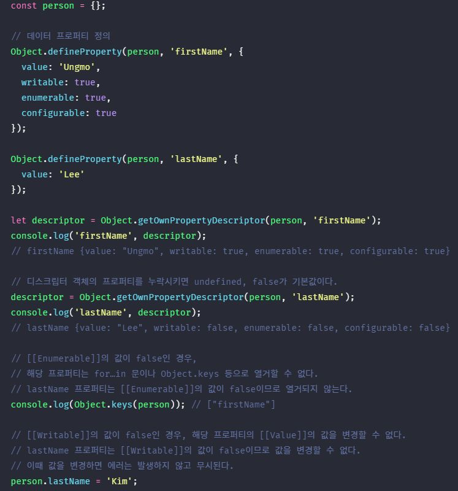

1. 내부 슬롯과 내부 메서드 #
내부 슬롯과 내부 메서드는 자바스크립트 엔진의 알고리즘을 설명하기 위해 ECMAScript 사양에서 사용하는 의사 프로퍼티와 의사 메서드이다. ECMAScript 사양에 등장하는 이중 대괄호([[…]])로 감싼 이름들이 내부 슬롯과 내부 메서드이다.

내부 슬롯과 내부 메서드는 ECMAScript 사양에 정의된 대로 구현되어 자바스크립트 엔진에서 실제로 동작하지만 외부로 공개된 객체의 프로퍼티는 아니다. 즉, 내부 슬롯과 내부 메서드는 자바스크립트 엔진의 내부 로직이므로 원칙적으로 자바스크립트는 내부 슬롯과 내부 메서드에 직접적으로 접근하거나 호출할 수 있는 방법을 제공하지 않는다. 단, 일부 내부 슬롯과 내부 메서드에 한하여 간접적으로 접근할 수 있는 수단을 제공하기는 한다.
2. 프로퍼티와 어트리뷰트와 프로퍼티 디스크립터 객체 #
자바스크립트 엔진은 프로퍼티를 생성할 때, 프로퍼티의 상태를 나타내는 프로퍼티 어트리뷰트를 기본값으로 자동 정의한다. 프로퍼티의 상태란 프로퍼티의 값(value), 값의 갱신 가능 여부(writable), 열거 가능 여부(enumerable), 재정의 가능 여부(configurable)를 말한다.
프로퍼티 어트리뷰트는 자바스크립트 엔진이 관리하는 내부 상태 값(meta-property)인 내부 슬롯([[Value]], [[Writable]], [[Enumerable]], [[Configurable]])이다. 따라서 프로퍼티 어트리뷰트에 직접 접근할 수 없지만, Object.getOwnPropertyDescriptor 메서드를 사용하여 간접적으로 확인할 수는 있다.
Object.getOwnPropertyDescriptor 메서드를 호출할 때, 첫번째 매개변수에는 객체의 참조를 전달하고 두번째 매개변수에는 프로퍼티 키를 문자열로 전달한다. 이때 Object.getOwnPropertyDescriptor 메서드는 프로퍼티 어트리뷰트 정보를 제공하는 프로퍼티 디스크립터(PropertyDescriptor) 객체를 반환한다. 만약 존재하지 않는 프로퍼티나 상속받은 프로퍼티에 대한 프로퍼티 디스크립터를 요구하면 undefined가 반환된다.
Object.getOwnPropertyDescriptor 메서드는 하나의 프로퍼티에 대해 프로퍼티 디스크립터 객체를 반환하지만 ES8에서 도입된 Object.getOwnPropertyDescriptors 메서드는 모든 프로퍼티의 프로퍼티 어트리뷰트 정보를 제공하는 프로퍼티 디스크립터 객체들을 반환한다.
3. 데이터 프로퍼티와 접근자 프로퍼티 #
프로퍼티는 데이터 프로퍼티와 접근자 프로퍼티로 구분할 수 있다.
- 데이터 프로퍼티
키와 값으로 구성된 일반적인 프로퍼티다. 지금까지 살펴본 모든 프로퍼티는 데이터 프로퍼티다. - 접근자 프로퍼티
자체적으로는 값을 갖지 않고 다른 데이터 프로퍼티의 값을 읽거나 저장할 때 호출되는 접근자 함수로 구성된 프로퍼티다.
3.1. 데이터 프로퍼티 #
데이터 프로퍼티는 아래와 같은 프로퍼티 어트리뷰트를 갖는다. 이 프로퍼티 어트리뷰트는 자바스크립트 엔진이 프로퍼티를 생성할 때, 기본값으로 자동 정의된다.
| 프로퍼티 어트리뷰트 |
프로퍼티 디스크립터 객체의 프로퍼티 |
설명 |
|---|---|---|
| [[Value]] | value | - 프로퍼티 키를 통해 프로퍼티 값에 접근하면 반환되는 값이다. - 프로퍼티 키를 통해 프로퍼티 값을 변경하면 [[Value]]에 값을 재할당한다.이때 프로퍼티가 없으면 프로퍼티를 동적 생성하고 생성된 프로퍼티의 [[Value]]에 값을 저장한다. |
| [[Writable]] | writable | - 프로퍼티 값의 변경 가능 여부를 나타내며 불리언 값을 갖는다. - [[Writable]]의 값이 false인 경우, 해당 프로퍼티의 [[Value]]의 값을 변경할 수 없는 읽기 전용 프로퍼티가 된다. |
| [[Enumerable]] | enumerable | - 프로퍼티의 열거 가능 여부를 나타내며 불리언 값을 갖는다. - [[Enumerable]]의 값이 false인 경우, 해당 프로퍼티는 for…in 문이나 Object.keys 메서드 등으로 열거할 수 없다. |
| [[Configurable]] | configurable | - 프로퍼티의 재정의 가능 여부를 나타내며 불리언 값을 갖는다. - [[Configurable]]의 값이 false인 경우, 해당 프로퍼티의 삭제, 프로퍼티 어트리뷰트 값의 변경이 금지된다. 단, [[Writable]]이 true인 경우, [[Value]]의 변경과 [[Writable]]을 false로 변경하는 것은 허용된다. 객체 밀봉과객체 동결 참고) |
3.2. 접근자 프로퍼티 #
접근자 프로퍼티는 자체적으로는 값을 갖지 않고 다른 데이터 프로퍼티의 값을 읽거나 저장할 때 사용하는 접근자 함수로 구성된 프로퍼티다.
| 프로퍼티 어트리뷰트 |
프로퍼티 디스크립터 객체의 프로퍼티 |
설명 |
|---|---|---|
| [[Get]] | get | 접근자 프로퍼티를 통해 데이터 프로퍼티의 값을 읽을 때 호출되는 접근자 함수이다. 즉, 접근자 프로퍼티 키로 프로퍼티 값에 접근하면 프로퍼티 어트리뷰트 [[Get]]의 값, 즉 getter 함수가 호출되고 그 결과가 프로퍼티 값으로 반환된다. |
| [[Set]] | set | 접근자 프로퍼티를 통해 데이터 프로퍼티의 값을 저장할 때 호출되는 접근자 함수이다. 즉, 접근자 프로퍼티 키로 프로퍼티 값을 저장하면 프로퍼티 어트리뷰트 [[Set]]의 값, 즉 setter 함수가 호출되고 그 결과가 프로퍼티 값으로 저장된다. |
| [[Enumerable]] | enumerable | - 프로퍼티의 열거 가능 여부를 나타내며 불리언 값을 갖는다. - [[Enumerable]]의 값이 false인 경우, 해당 프로퍼티는 for…in 문이나 Object.keys 메서드 등으로 열거할 수 없다. |
| [[Configurable]] | configurable | - 프로퍼티의 재정의 가능 여부를 나타내며 불리언 값을 갖는다. - [[Configurable]]의 값이 false인 경우, 해당 프로퍼티의 삭제, 프로퍼티 어트리뷰트 값의 변경이 금지된다. 단, [[Writable]]이 true인 경우, [[Value]]의 변경과 [[Writable]]을 false로 변경하는 것은 허용된다. 객체 밀봉과객체 동결 참고) |
접근자 함수는 getter/setter 함수라고도 부른다. 접근자 프로퍼티는 getter와 setter 함수를 모두 정의할 수도 있고 하나만 정의할 수도 있다. 아래 예제를 살펴보자.
person 객체의 firstName과 lastName 프로퍼티는 일반적인 데이터 프로퍼티다. 메서드 앞에 get, set이 붙은 메서드가 있는데 이것들이 바로 getter와 setter 함수이고 getter/setter 함수의 이름 fullName이 접근자 프로퍼티이다. 접근자 프로퍼티는 자체적으로 값(프로퍼티 어트리뷰트 [[Value]])을 가지지 않으며 다만 데이터 프로퍼티의 값을 읽거나 저장할 때 관여할 뿐이다.
이를 내부 슬롯/메서드 관점에서 설명하면 다음과 같다. 접근자 프로퍼티 fullName으로 프로퍼티 값에 접근하면 내부적으로 [[Get]] 내부 메서드가 호출되어 아래와 같이 동작한다.
ECMAScript 스펙에서 정의한 [[Get]] 내부 메서드의 사양을 만족시키는 구현체가 자바스크립트 엔진에 존재한다는 것이 중요하지 [[Get]]이란 이름으로 실제 자바스크립트 엔진이 구현되었는지는 중요하지 않다. 어차피 [[Get]] 내부 메서드에 직접 접근할 수도 없다.
- 프로퍼티 키가 유효한지 확인한다. 프로퍼티 키는 문자열 또는 심볼이어야 한다. 프로퍼티 키 “fullName”은 문자열이므로 유효한 프로퍼티 키이다.
- 프로토타입 체인에서 프로퍼티를 검색한다. person 객체에 fullName 프로퍼티가 존재한다.
- 프로토타입
- 프로토타입은 어떤 객체의 상위(부모) 객체의 역할을 하는 객체이다. 프로토타입은 하위(자식) 객체에게 자신의 프로퍼티와 메서드를 상속한다. 프로토타입 객체의 프로퍼티나 메서드를 상속받은 하위 객체는 자신의 프로퍼티 또는 메서드인 것처럼 자유롭게 사용할 수 있다. 프로토타입 체인은 프로토타입이 단방향 링크드 리스트 형태로 연결되어 있는 상속 구조를 말한다. 객체의 프로퍼티나 메서드에 접근하려고 할 때 해당 객체에 접근하려는 프로퍼티 또는 메서드가 없다면 프로토타입 체인을 따라 프로토타입의 프로퍼티나 메서드를 차례대로 검색한다. 프로토타입과 프로토타입 체인에 대해서는 19장에서 자세히 살펴보도록 하자.
- 검색된 fullName 프로퍼티가 데이터 프로퍼티인지 접근자 프로퍼티인지 확인한다. fullName 프로퍼티는 접근자 프로퍼티이다.
- 접근자 프로퍼티 fullName의 프로퍼티 어트리뷰트 [[Get]]의 값, 즉 getter 함수를 호출하여 그 결과를 반환한다. 프로퍼티 fullName의 프로퍼티 어트리뷰트 [[Get]]의 값은 Object.getOwnPropertyDescriptor 메서드가 반환하는 프로퍼티 디스크립터 객체의 get 프로퍼티 값과 같다.
접근자 프로퍼티와 데이터 프로퍼티 구별 방법은 아래와 같다.
// 일반 객체의 __proto__는 접근자 프로퍼티이다.
Object.getOwnPropertyDescriptor(Object.prototype, '__proto__');
// {get: ƒ, set: ƒ, enumerable: false, configurable: true}
// 함수 객체의 prototype은 데이터 프로퍼티이다.
Object.getOwnPropertyDescriptor(function() {}, 'prototype');
// {value: {…}, writable: true, enumerable: false, configurable: false}
Object.getOwnPropertyDescriptor 메서드가 반환한 프로퍼티 어트리뷰트를 객체로 표현한 프로퍼티 디스크립터 객체를 유심히 살펴보자. 접근자 프로퍼티와 데이터 프로퍼티의 프로퍼티 디스크립터 객체의 프로퍼티가 다른 것을 알 수 있다.
4. 프로퍼티 정의 #
프로퍼티 정의란 새로운 프로퍼티를 추가하면서 프로퍼티 어트리뷰트를 명시적으로 정의하거나, 기존 프로퍼티의 프로퍼티 어트리뷰트를 재정의하는 것을 말한다. .예를 들어 프로퍼티 값을 갱신 가능하도록 할 것인지, 프로퍼티를 열거 가능하도록 할 것인지, 프로퍼티를 재정의 가능하도록 할 것인지 정의할 수 있다. 이를 통해 객체의 프로퍼티가 어떻게 동작해야 하는지를 명확히 정의할 수 있다.
Object.defineProperty 메서드를 사용하면 프로퍼티의 어트리뷰트를 정의할 수 있다. 인수는 객체의 참조와 데이터 프로퍼티의 키인 문자열 그리고 프로퍼티 디스크립터 객체를 전달한다.

Object.defineProperty 메서드로 프로퍼티 정의할 때 프로퍼티 디스크립터 객체의 프로퍼티를 일부 생략할 수 있다. 프로퍼티 디스크립터 객체에서 생략된 어트리뷰트는 아래와 같이 기본값이 적용된다.
| 프로퍼티 디스크립터 객체의 프로퍼티 | 대응하는 프로퍼티 어트리뷰트 | 디스크립터 객체의 프로퍼티 누락 시의 기본값 |
|---|---|---|
| value | [[Value]] | undefined |
| get | [[Get]] | undefined |
| set | [[Set]] | undefined |
| writable | [[Writable]] | false |
| enumerable | [[Enumerable]] | false |
| configurable | [[Configurable]] | false |
Object.defineProperty 메서드는 한번에 하나의 프로퍼티만 정의할 수 있다. Object.defineProperties 메서드를 사용하면 여러 개의 프로퍼티를 한번에 정의할 수 있다.
5. 객체 변경 방지 #
객체는 변경 가능한 값이므로 재할당없이 직접 변경이 가능하다. 즉, 프로퍼티를 추가하거나 삭제할 수 있고, 프로퍼티의 값을 갱신할 수 있으며 Object.defineProperty 또는 Object.defineProperties 메서드를 사용하여 프로퍼티 어트리뷰트를 재정의할 수도 있다.
자바스크립트는 객체의 변경을 방지할 수 있는 다양한 메서드를 제공한다. 객체 변경 방지 메서드 들은 객체의 변경을 금지하는 강도가 다르다.
| 구분 | 메서드 | 프로퍼티 추가 | 프로퍼티 삭제 | 프로퍼티 값 읽기 | 프로퍼티 값 쓰기 | 프로퍼티 어트리뷰트 재정의 |
|---|---|---|---|---|---|---|
| 객체 확장 금지 | Object.preventExtensions | ✕ | O | O | O | O |
| 객체 밀봉 | Object.seal | ✕ | ✕ | O | O | ✕ |
| 객체 동결 | Object.freeze | ✕ | ✕ | O | ✕ | ✕ |
5.1. 객체 확장 금지 #
Object.preventExtensions 메소드는 객체의 확장을 금지한다. 객체 확장 금지란 프로퍼티 추가 금지를 의미한다. 즉, 확장이 금지된 객체는 프로퍼티 추가가 금지된다. 프로퍼티는 프로퍼티 동적 추가와 Object.defineProperty 메소드로 추가할 수 있다. 이 두가지 추가 방법이 모두 금지된다.
확장이 금지된 객체인지 여부는 Object.isExtensible 메소드로 확인 할 수 있다.
5.2. 객체 밀봉 #
Object.seal 메소드는 객체를 밀봉한다. 객체 밀봉이란 프로퍼티 추가 및 삭제와 프로퍼티 어트리뷰트 재정의 금지를 의미한다. 즉, 밀봉된 객체는 읽기와 쓰기만 가능하게 된다.
밀봉된 객체인지 여부는 Object.isSealed 메소드로 확인 할 수 있다.
5.3. 객체 동결 #
Object.freeze 메소드는 객체를 동결한다. 객체 동결이란 프로퍼티 추가 및 삭제와 프로퍼티 어트리뷰트 재정의 금지, 프로퍼티 값 갱신 금지를 의미한다. 즉, 동결된 객체는 읽기만 가능하게 된다.
동결된 객체인지 여부는 Object.isFrozen 메소드로 확인 할 수 있다.
5.4. 불변 객체 #
지금까지 살펴본 변경 방지 메소드들은 얕은 변경 방지로 직속 프로퍼티만 변경이 방지되고 중첩 객체까지는 영향을 주지는 못하다. 따라서 Object.freeze 메소드로 객체를 동결하여도 중첩 객체까지 동결할 수 없다.
객체의 중첩 객체까지 동결하여 변경이 불가능한 읽기 전용의 불변 객체를 구현하려면 객체를 값으로 갖는 모든 프로퍼티에 대해 재귀적으로 Object.freeze 메소드를 호출해야 한다.